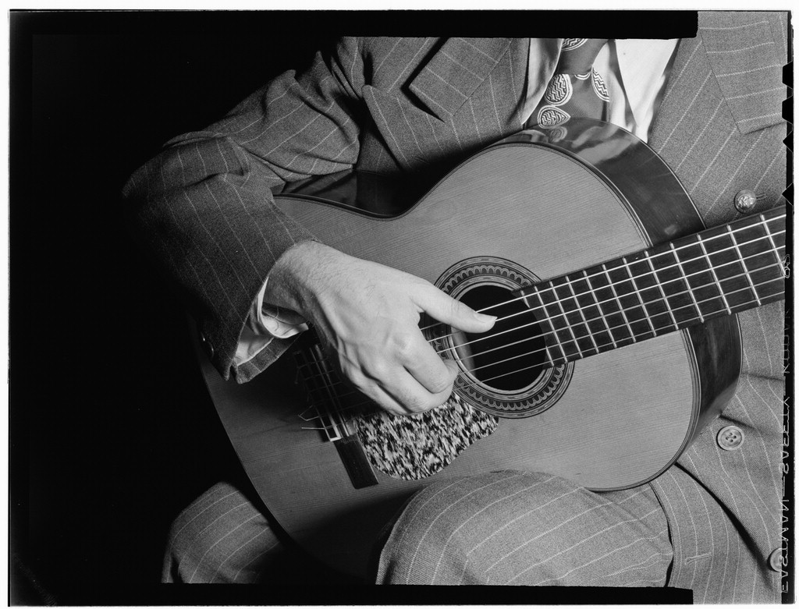
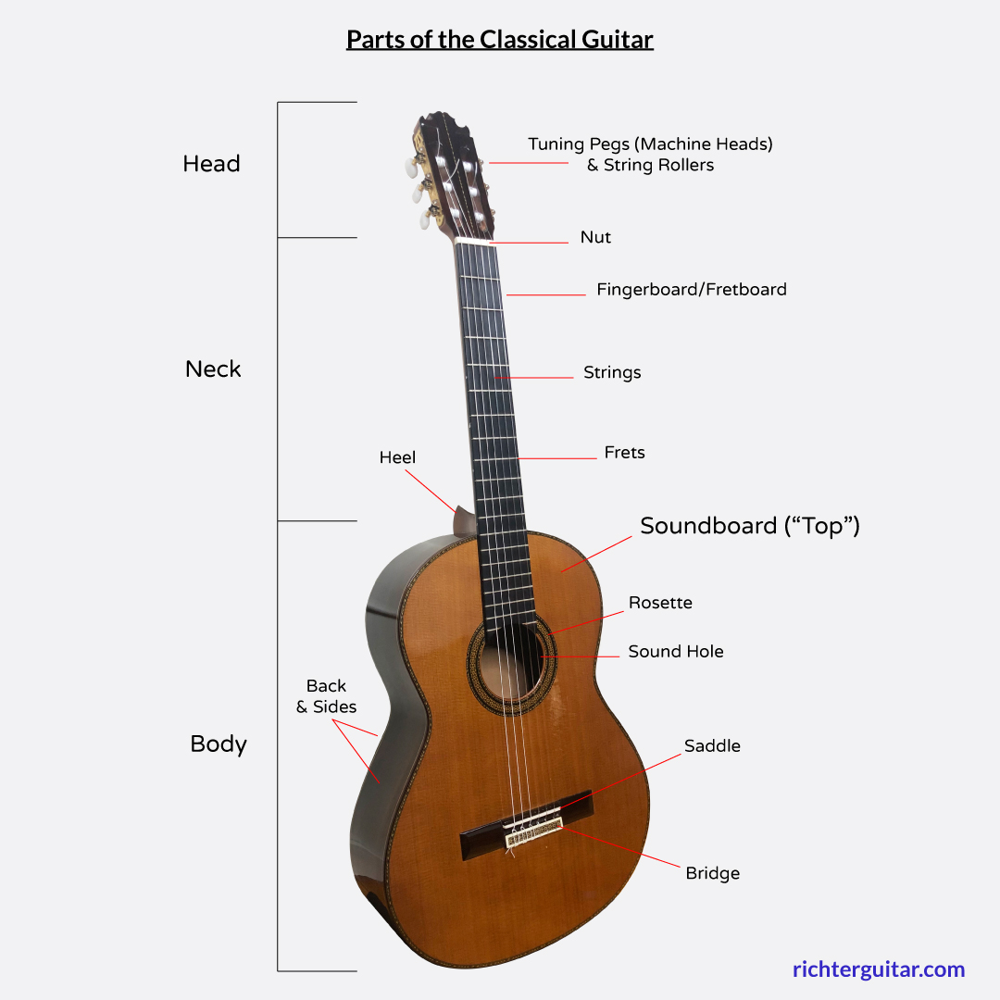
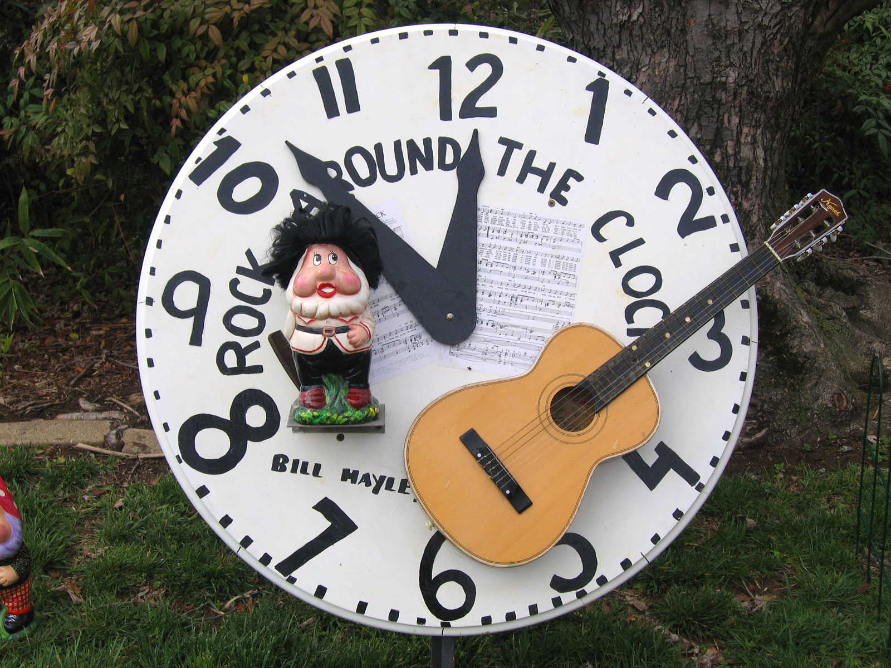
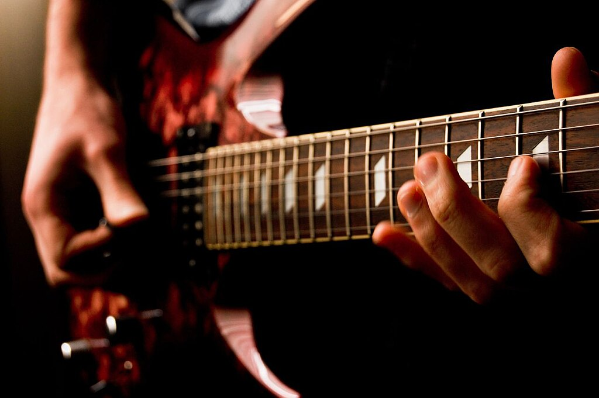

A little bit about me
My name is Wes and I am a Computer Science at UNC Charlotte. While I am pretty busy between classes, assignments, coding projects, work, and extracurriculars I do like to do some fun stuff in my free time.
One of my favorite pastimes is playing guitar, and while I'm not a professional by any means or spend a ton of time practicing, It's really fun to just mess around and play some tunes from time to time.

What is a guitar
A guitar is a stringed musical instrument that produces sound through the vibration of its strings, which are stretched across a hollow or solid body and neck. Traditionally, guitars have six strings that can be plucked or strummed with the fingers or a pick, creating notes and chords used across a wide range of musical styles. The instrument’s design allows for both rhythm and melody, making it one of the most versatile and expressive tools in modern music.

Guitars come in many types, including acoustic, classical, and electric models, each with its own tone and character. Acoustic guitars rely on their hollow bodies to amplify sound naturally, while electric guitars use magnetic pickups and amplifiers to produce a louder and more varied sound. Whether used for gentle fingerpicking or powerful rock riffs, the guitar remains a central instrument in genres from folk to metal, beloved for its portability, range, and ability to convey emotion.
Playing guitar as a hobby offers a creative and rewarding way to express yourself through music. It can be both relaxing and stimulating, allowing you to unwind while also challenging your coordination and focus. Many people enjoy learning songs they love, experimenting with songwriting, or simply strumming for enjoyment. As you practice, you develop skills like rhythm, timing, and ear training, which can deepen your appreciation for music as a whole. Whether played alone or with friends, guitar playing provides a lifelong hobby that fosters creativity, confidence, and connection.
When to play guitar
A hobbyist can play guitar whenever they have free time to relax, practice, or simply enjoy making music. Many players find early mornings or evenings ideal for quiet practice sessions, allowing them to start or end their day on a peaceful and creative note. Weekends often provide longer stretches of uninterrupted time to focus on learning new songs, refining techniques, or experimenting with different playing styles. The key is consistency—setting aside even 15–30 minutes a day can lead to steady progress and make playing feel like a natural part of one’s routine.

There are also great times throughout the year to immerse yourself in guitar playing. Winter months, when people spend more time indoors, are perfect for focused practice or recording projects. In contrast, summer offers opportunities to play outdoors, around campfires, or at gatherings with friends. Seasonal downtime, such as school breaks or vacations, gives hobbyists a chance to dedicate extra time to their craft. Ultimately, the best time to play guitar is whenever it brings you joy, helps you unwind, or connects you with others through music.
Where to play guitar
A hobbyist can play guitar almost anywhere, making it one of the most flexible and portable instruments. Many people enjoy practicing at home in a quiet room, garage, or personal music space where they can focus without distractions. Playing at home also allows hobbyists to experiment freely with different sounds, record their progress, and develop their skills at their own pace. Acoustic guitars are especially convenient because they don’t require any equipment beyond the instrument itself, making them perfect for spontaneous playing.
Beyond the home, guitars can be played in a variety of social or inspiring settings. Parks, beaches, and campfires are classic spots for relaxed outdoor playing, where the sound of an acoustic guitar can create a warm and inviting atmosphere. Hobbyists might also bring their guitar to open mic nights, community centers, or local cafes to share music with others and build confidence. Whether indoors or outdoors, playing guitar in different environments helps musicians stay inspired, connect with people, and enjoy their hobby in new and meaningful ways.
Common places to play guitar
- In your bedroom
- Outside on a college campus
- On a stage
- Around a campfire
How to play guitar
Playing the guitar involves using one hand to press down strings along the fretboard to form notes or chords, while the other hand strums or plucks the strings to produce sound. It requires coordination between both hands, an understanding of rhythm, and a sense of timing. Beginners typically start by learning simple chords and transitions between them, gradually adding techniques like strumming patterns, fingerpicking, and scales. Over time, consistent practice builds muscle memory, allowing players to focus more on musical expression rather than mechanics.
Steps for learning
- Get familiar with your guitar – learn the parts of the instrument and how to hold it properly.
- Tune your guitar – use a tuner to make sure each string sounds correct before practicing.
- Learn basic open chords – start with simple ones like G, C, D, and E minor.
- Practice chord transitions – switch between chords slowly and evenly to build fluid motion.
- Learn basic strumming patterns – use a pick or your fingers to practice different rhythms.
- Play simple songs – apply chords and strumming to songs you enjoy to stay motivated.
- Develop finger strength and dexterity – practice scales or finger exercises daily.
- Listen and play along – use recordings or backing tracks to improve timing and ear training.
- Stay consistent – short, daily practice sessions are more effective than long, infrequent ones.
- Have fun and experiment - explore new chords, techniques, or genres as your confidence grows.
Some common guitar chords
Why should you play guitar
Playing guitar is one of the most enjoyable and rewarding ways to experience music. It allows people to express emotions, relieve stress, and connect with their creative side. Whether you’re strumming soft acoustic melodies or shredding electric solos, the guitar offers endless possibilities for personal expression. It’s also highly portable and versatile, fitting seamlessly into almost any musical style—from folk and pop to blues, jazz, and rock. The sense of accomplishment that comes from learning new chords, mastering a favorite song, or writing your own music can be deeply satisfying and motivating.
Beyond personal enjoyment, learning guitar builds valuable skills and fosters meaningful connections. It strengthens discipline, patience, and focus as you practice and progress over time. Playing with others—whether at jam sessions, open mics, or informal gatherings—creates opportunities for social interaction and collaboration. The guitar can even serve as a lifelong companion, offering comfort during tough times and joy during celebrations. Ultimately, playing guitar enriches your life by combining creativity, self-improvement, and connection in a single, accessible hobby.

AI prompts used
- What are the proper steps I should go about completing this? [rubric]
- Generate two short paragraphs describing what a guitar is
- Generate a paragraph explaining guitar as a hobby
- Generate two paragraphs discussing when a hobbyist should/can play guitar
- Give 1 paragraph describing how to play guitar and one step by step list for beginning to learn and practice
- Generate two paragraphs detailing why someone should play guitar
- Does this code satisfy these requirements? [rubric] [code]